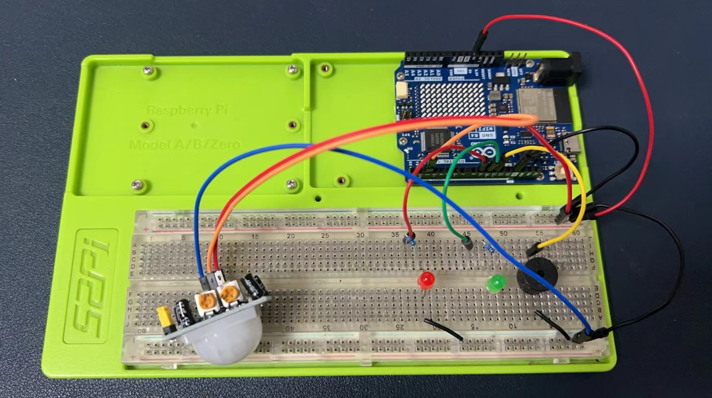
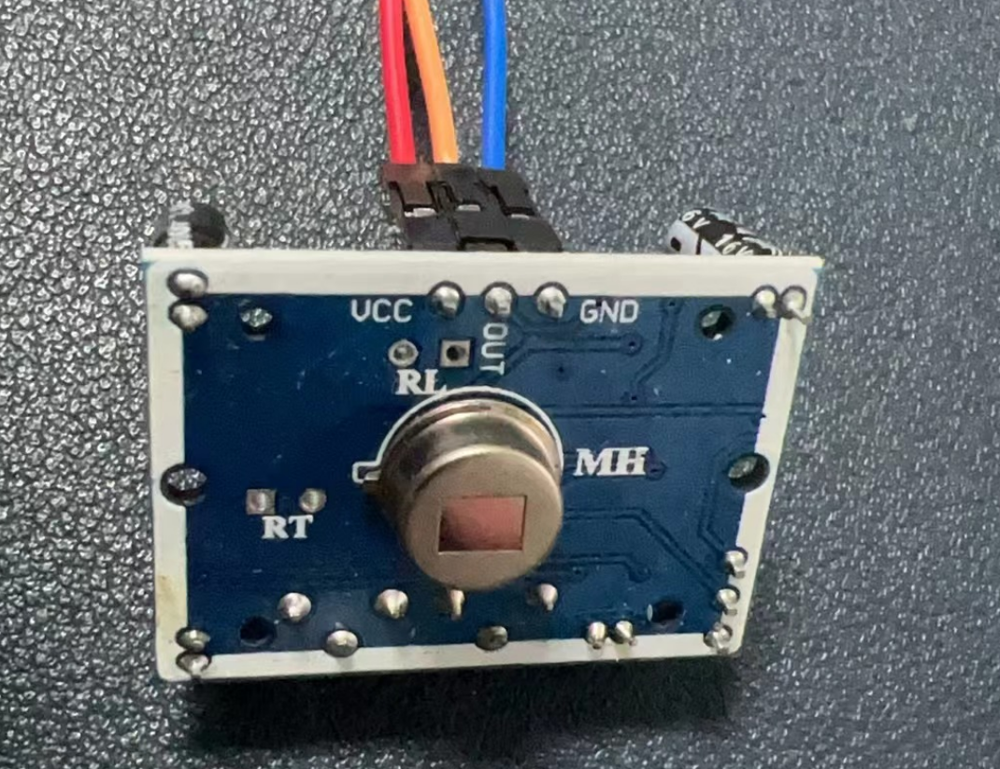
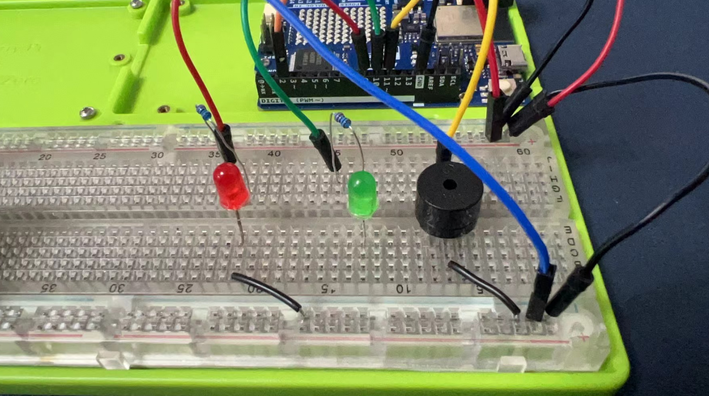
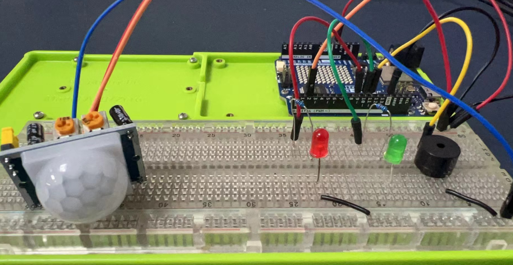
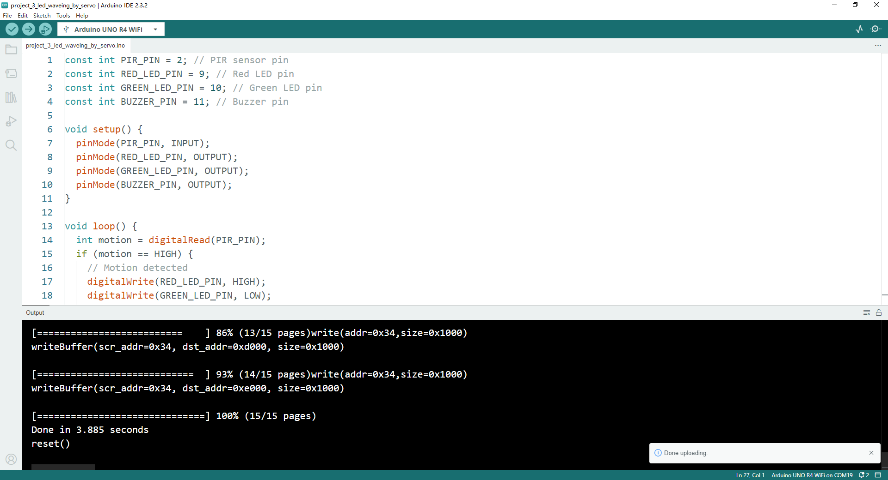

Project 4 Motion Detection by using PIR Sensor
Motion Detection Device with Arduino UNO R4 WiFi

Materials Needed:
- 1 x PIR Motion Sensor
- 1 x Red LED
- 1 x Green LED
- 1 x Buzzer
- 10 x Jumper wires (DuPont wires)
- 1 x Arduino UNO R4 WiFi
- 1 x 52Pi Experiment Platform
- 1 x USB-C programming Cable
- 1 x Jumper wire box
Circuit Setup:
Connect the PIR Sensor:
- Connect the VCC pin of the PIR sensor to the 5V pin on the Arduino.
- Connect the GND pin of the PIR sensor to one of the GND pins on the Arduino.
- Connect the OUT pin of the PIR sensor to a digital pin on the Arduino (e.g., pin 2).

Connect the LEDs:
- Connect the anode (longer leg) of the red LED to a digital pin through a 220-ohm resistor (e.g., pin 9).
- Connect the cathode (shorter leg) of the red LED to a GND pin.
- Repeat the process for the green LED with another digital pin and resistor (e.g., pin 10).
Connect the Buzzer:
- Connect one pin of the buzzer to a digital pin on the Arduino (e.g., pin 11) through a 220-ohm resistor.
- Connect the other pin of the buzzer to a GND pin.


Secure the Connections:
- Use jumper wires to ensure all components are securely connected to the Arduino.
Arduino Code:
const int PIR_PIN = 2; // PIR sensor pin
const int RED_LED_PIN = 9; // Red LED pin
const int GREEN_LED_PIN = 10; // Green LED pin
const int BUZZER_PIN = 11; // Buzzer pin
void setup() {
pinMode(PIR_PIN, INPUT);
pinMode(RED_LED_PIN, OUTPUT);
pinMode(GREEN_LED_PIN, OUTPUT);
pinMode(BUZZER_PIN, OUTPUT);
}
void loop() {
int motion = digitalRead(PIR_PIN);
if (motion == HIGH) {
// Motion detected
digitalWrite(RED_LED_PIN, HIGH);
digitalWrite(GREEN_LED_PIN, LOW);
digitalWrite(BUZZER_PIN, HIGH);
delay(200);
} else {
// No motion
digitalWrite(RED_LED_PIN, LOW);
digitalWrite(GREEN_LED_PIN, HIGH);
digitalWrite(BUZZER_PIN, LOW);
delay(200);
}
}
Upload sketch:
- upload sketch as mentioned before.

Code Explanation:
- The PIR sensor detects motion and outputs a HIGH signal on its OUT pin.
- When motion is detected, the red LED turns on, the green LED turns off, and the buzzer sounds.
- When no motion is detected, the green LED turns on, the red LED turns off, and the buzzer is silent.
Notes:
- Ensure all connections are secure and correctly polarized to avoid damaging components.
- You can adjust the sensitivity and delay of the PIR sensor using the potentiometers on the sensor itself.
- Upload the code to your Arduino UNO R4 WiFi and test the motion detection functionality.
This setup provides a basic motion detection device that can be expanded with additional features such as wireless notifications or integration with home automation systems.
Demo Code Download:
- Demo code sketch Download